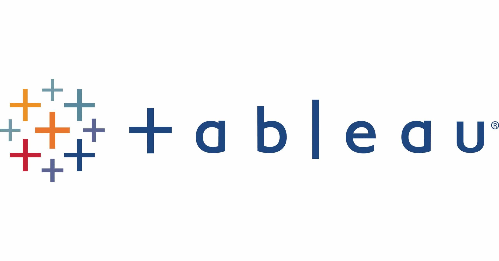
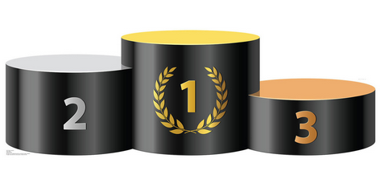

Sales dashboard
Interactive dashboard from a fictional bike store to review their revenues using relationships and DAX commands.
Interactive dashboard from a fictional bike store to review their revenues using relationships and DAX commands.
Query project using a self-made database about employee data in SQL Server (SMSS). JOIN, CASE, GROUP BY, TABLE and more commands.

A simple visualization using the popular videogames sales database from Kaggle. Filtering through 2009-2016 sales by genres and platforms.

An analysis of Owens Cornings (OC) alongside Josué Ávila to determine if it is undervalued or overvalued following its acquisition of Masonite International Corporation (DOOR) in April 2024. Using Discounted Cash Flow method and multiples as EV, EBITDA ratios. Data from the Financial Statements in SEC EDGAR.

A database that I build for statistics of a custom Pokémon tournament. Python alongside its pandas package were used to add the data. R was used to create tables to showscase the results in a public spreadsheet.